한 번 확인으로는 왜 부족할까요
에이전트를 만들면 보통 메시지 하나 넣어 보고, 답이 괜찮으면 배포해요. 실제 사용자가 쓰기 시작하면 그때부터 깨지죠. 아래 화면의 왼쪽 '입력 하나'에서 길이 세 갈래로 갈라지는데, 손으로 확인한 건 가운데 검은 '길 2' 하나뿐이에요.
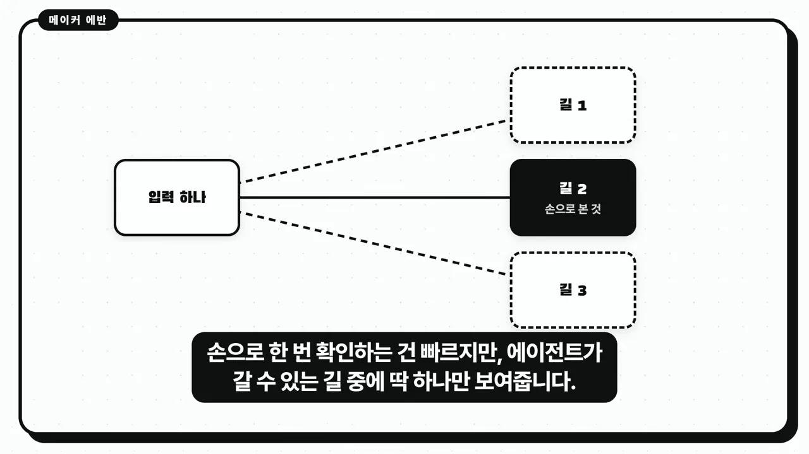
영상이 소개하는 해법은 한 줄이에요. 에이전트를 만들기 전에 좋은 동작이 뭔지 Evals로 먼저 정의해요. 그러면 가운데 Evals를 둘러싼 모델, 검색, 구조가 모두 말싸움이 아니라 테스트로 정해져요.
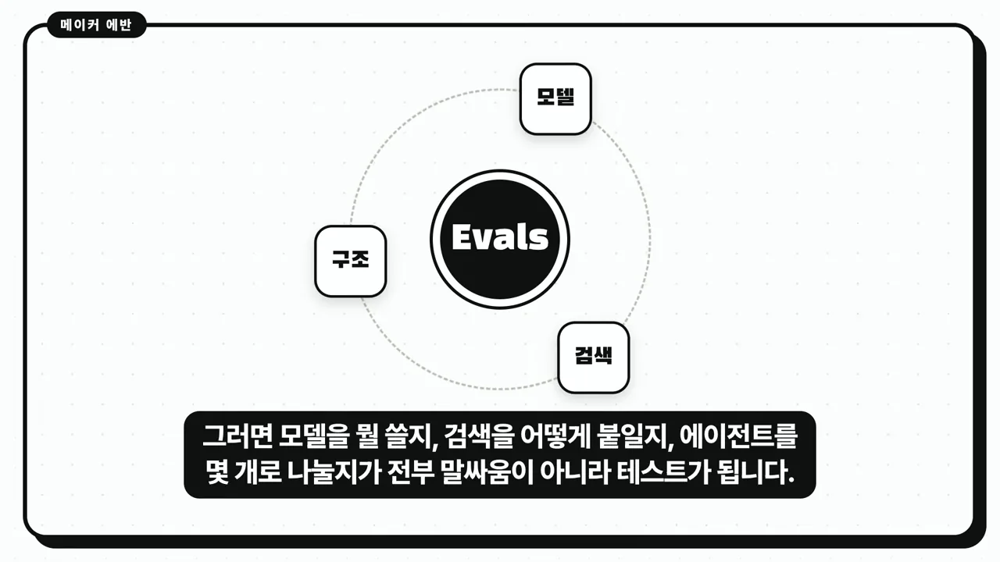
먼저 용어 다섯 개
| 용어 | 영상의 설명 |
|---|---|
| Evals | 점수를 매기는 동작 테스트예요. 입력을 주고, 뭘 하는지 보고, 괜찮았는지 채점해요 |
| 골든 | 입력 하나와 좋은 동작의 기준을 묶은 거예요. 꼭 해야 할 것, 하면 안 될 것, 잘했을 때의 모습을 적어요 |
| 메트릭 | 실제 채점 기준이에요. 코드 규칙(도구 이름 일치, 밀리초)일 수도, 모델 점수(말투 점수, 수 초)일 수도 있어요 |
| 저지 | 규칙으로 못 보는 것, 이를테면 말투를 읽고 판단하는 모델이에요 |
| 트레이스 | 한 번 실행할 때의 모든 단계와 도구 호출 기록이에요 |
순서는 테스트 주도 개발과 닮았어요. 실패하는 케이스부터 적고, 통과할 때까지 고치고, 그 케이스를 남겨 둬서 같은 버그가 몰래 돌아오지 못하게 해요.
에이전트는 왜 한 번으로 안 될까요
일반 소프트웨어는 2 + 2가 언제나 4라서, 테스트를 한 번 돌리면 결과가 계속 유효해요. 에이전트는 같은 입력에도 다른 출력이 나와요. 이유는 세 가지예요.
- 샘플링 — 모델은 다음 단어를 늘 1등만 고르지 않고 확률이 높은 후보 중에서 뽑아요. 템퍼러처를 낮추면 흔들림은 줄지만 없어지진 않고, 너무 낮추면 답이 딱딱해져요.
- 정답이 여러 개 — 같은 뜻을 다른 문장으로 말해도 사용자는 둘 다 받아들여요. 정해진 문자열과 똑같은지 비교하는 테스트는 맞는 답을 틀렸다고 처리해요.
- 도구 선택 — 가장 큰 문제예요. 에이전트는 실행 중에 어떤 도구를 어떤 순서로 쓸지 스스로 골라요.
세 번째 예시가 이 영상 전체에 계속 나와요. 도움말 문서 검색(search)과 IT(Information Technology) 티켓 생성(ticket) 도구 두 개를 가진 에이전트에 'VPN이 안 돼요'를 똑같이 3번 넣었어요. 아래 그림처럼 세 번 모두 다른 길로 갔어요.
몇 번 중 몇 번 통과하나
그래서 질문을 '한 번 통과했나'에서 '몇 번 중 몇 번 통과하나'로 바꿔요. 한 케이스를 한 번 돌리는 걸 트라이얼, 통과한 비율을 패스 레이트라고 불러요. 같은 케이스를 5번 돌려 3번 통과하면 60%예요. 절반 가까이 검색을 건너뛴다는 뜻이죠.
글은 새 케이스를 3번부터 돌리라고 해요. 셋이 같은 결과면 저위험 케이스에는 충분한 신호예요. 엇갈리면 불안정한 케이스로 표시하고 더 돌려요. 이런 케이스가 모델을 바꿀 때 가장 먼저 깨져요. 아래 화면처럼 실패 비용이 큰 케이스는 처음부터 더 많이 돌려요.
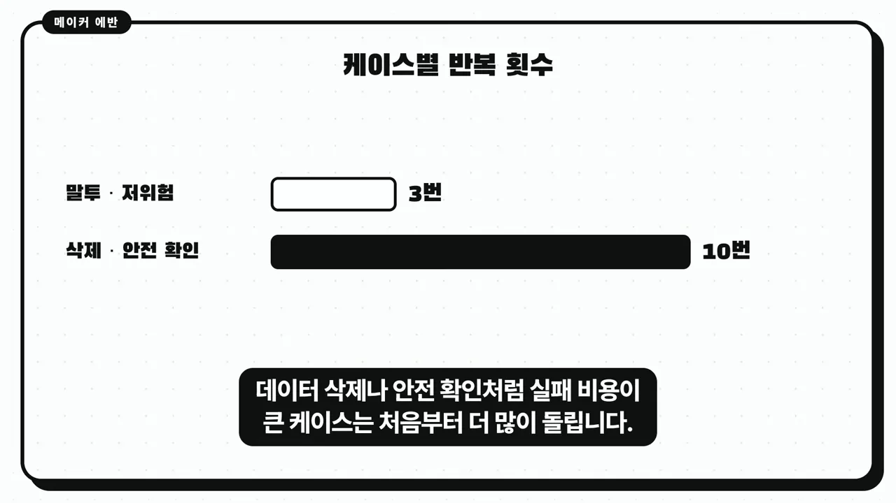
테스트 세트는 실제 실패에서 만들어요
테스트는 몇 개면 될까요? 글의 답은 '정해진 숫자는 없다'예요. 깔끔하게 상상한 케이스를 많이 모아도 실제 버그는 놓치고, 실제 실패에서 뽑은 적은 케이스가 더 많이 잡아요.
케이스는 어디서 오나요
- 지난 지원 티켓과 채팅 로그에서 개인정보만 지우고, 지저분한 문장 그대로 가져와요.
- 데모에서 이상하게 나온 입력, 손으로 확인하다 실패한 입력도 고치기 전에 먼저 케이스로 넣어요.
작업 하나마다 세 종류를 덮어요. 꼭 해야 하는 것, 하면 안 되는 것, 계속 돼야 하는 것이에요. 아래 표는 티켓 도구를 새로 붙였을 때의 예예요. 가운데 줄이 핵심이에요. 'VPN 재설정 방법' 같은 사용법 질문에는 티켓을 만들면 안 되고 문서로 답해야 해요.
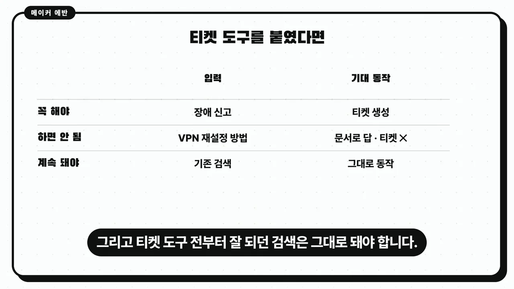
사용자에게까지 간 버그는 그 입력 그대로 새 케이스가 돼요. 화면의 세 칸 '사용자가 겪은 버그 → 그 입력 그대로 → 새 케이스'가 그 흐름이에요. 이렇게 세트가 계속 자라요.
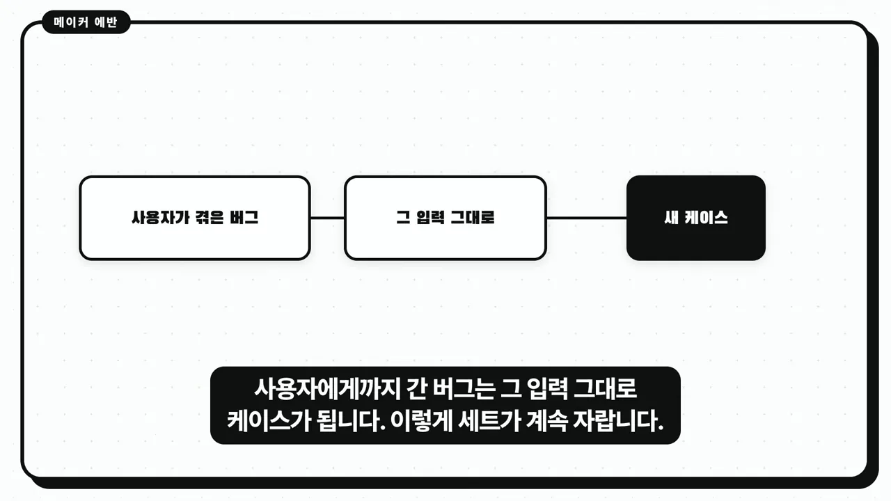
세트가 충분한지는 개수가 아니라, 릴리스마다 처음 보는 종류의 실수가 줄어드는지로 판단해요. 아래 막대는 영상이 '예시 수치'라고 밝힌 그림이에요. 릴리스 1에 9건이던 새 실수가 릴리스 7에는 1건이 됐어요.
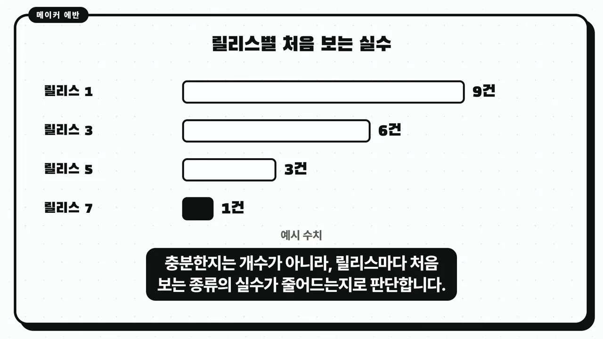
숨긴 세트를 따로 둬요
프롬프트를 고칠 때 절대 보지 않는 케이스를 따로 둬요. 왼쪽 '튜닝 세트'는 보면서 고치고, 오른쪽 '숨긴 세트'는 절대 안 봐요.
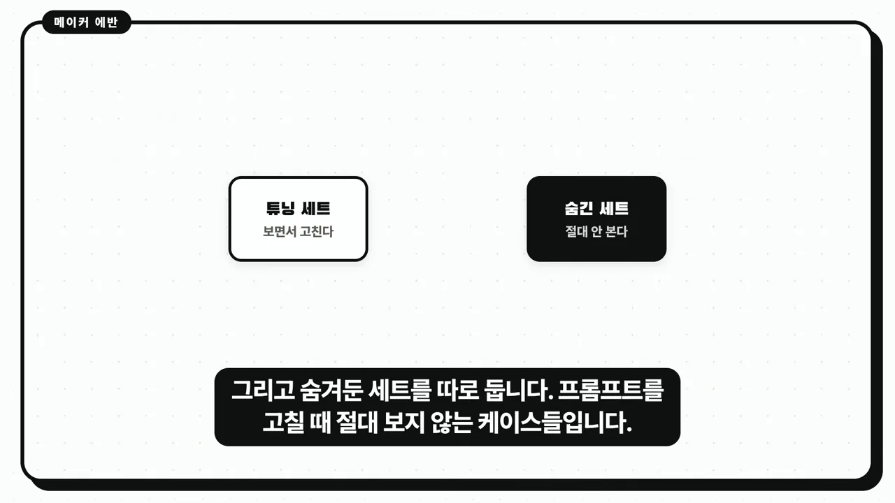
두 세트의 점수 차이가 경고 신호예요. 아래 화면에서는 튜닝 세트가 86점인데 숨긴 세트는 56점이에요. 이런 개선은 실제 사용자 문장에서 버티지 못해요.
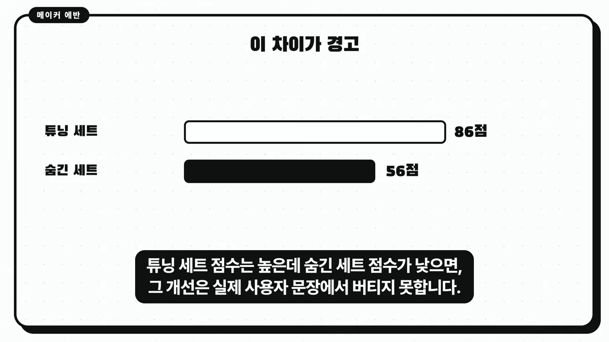
모델로 만든 가짜 케이스는 처음 시작할 때만 써요. 실제 문장보다 깔끔해서, 다 통과해도 현실에서 실패할 수 있거든요. 이 대목에서 영상은 참고 자료로 DeepEval 블로그의 'Eval Driven Development' 글을 화면에 띄워요.
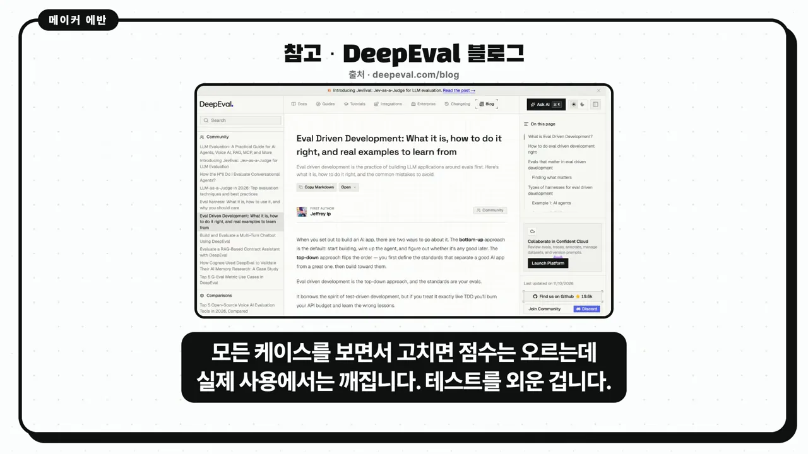
누가 채점하고, 무엇을 볼까요
누가 채점할지는 순서가 정해져 있어요. 코드, 그다음 모델 저지, 그다음 사람이에요.
코드: 규칙으로 쓸 수 있는 건 전부
코드는 빠르고, 공짜고, 매번 같은 결과가 나와요. 기본 확인은 화면의 카드 네 장이에요. 맞는 도구를 불렀는지, 인자가 맞는지, 실제로 기록이 생겼는지, 인용 표시가 있는지요.
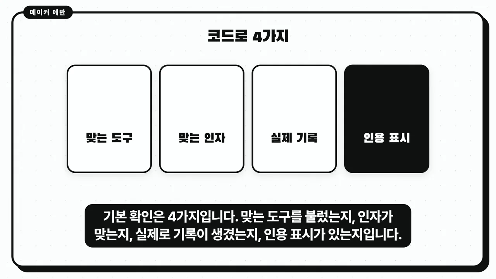
점수는 비율로 읽어요. 아래 화면처럼 50번 중 47번 맞는 도구를 불렀다면 라우팅은 대체로 돼요. 남은 3번이 어디서 헷갈리는지 알려 주고요. 반대로 50번 중 42번만 인용 표시가 있다면 근거 연결이 약하니 그것부터 고쳐요.
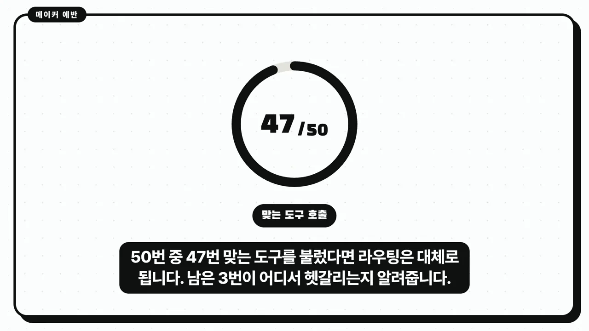
모델 저지: 읽어 봐야 아는 것만
말투, 정책의 미묘한 선, 명확성은 읽어 봐야 알아요. 화면의 카드 세 장이 저지에게만 맡기는 일이에요.
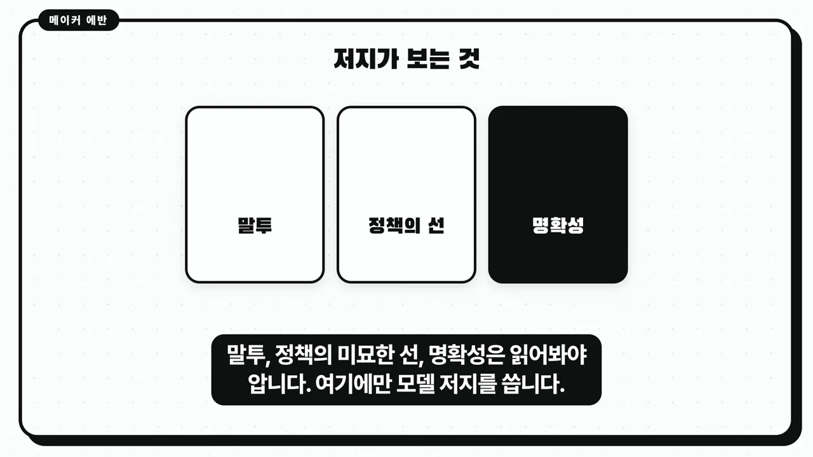
그런데 모델 저지는 중립이 아니에요. 영상이 꼽은 편향 세 가지와 막는 법을 표로 모았어요.
| 편향 | 무엇을 선호하나 | 막는 법 |
|---|---|---|
| 위치 편향 | 먼저 보여 준 답 | 순서를 바꿔 2번 채점하고, 양쪽 다 이겨야 이긴 걸로 쳐요 |
| 길이 편향 | 긴 답 | 짧고 좋은 예시와 길고 나쁜 예시를 루브릭에 같이 넣어요 |
| 자기 계열 선호 | 자기 모델 계열의 문체 | 답을 쓴 모델과 다른 계열의 모델로 채점해요 |
저지 자체도 테스트해요. 확실히 나쁜 대화 11개를 넣었더니 10개를 잡았다는 식으로요. 글에 인용된 한 팀은 작은 저지가 나쁜 케이스 4~5개를 놓쳤고, 다른 계열의 큰 모델이 그걸 잡았대요.
사람: 좋은 게 뭔지 정하고 저지를 감사해요
사람은 매번 채점하기엔 느려요. 대신 좋은 게 뭔지 예시로 정하고, 저지를 감사해요. 샘플 50개를 사람과 저지가 따로 채점해서 41개가 일치했다면, 어긋난 9개가 루브릭의 빈칸이에요.
결과를 볼까, 과정을 볼까
어떤 길로 가도 되는 작업이면 결과만 봐요. 리서치 요약이 정확하고 출처가 있으면 돼요. 여기서 단계를 강제하면, 더 짧은 길을 찾은 좋은 모델이 오히려 테스트에서 떨어져요.
반대로 순서 자체가 약속인 작업이 있어요. 아래 화면의 검은 첫 칸 '자격 확인'이 먼저고, 옵션 제시와 티켓 생성은 그다음이에요. 자격 없는 사람에게 만든 티켓은 결과만 보면 멀쩡해 보여요.
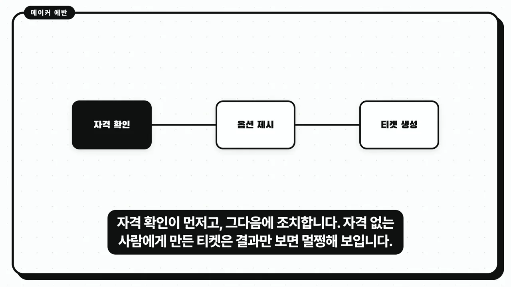
이런 작업은 단계를 비율로 봐요. 50번 중 46번 자격부터 확인했다면, 4번 건너뛴 걸 고쳐야 배포해요. 50번 중 43번 확인을 제대로 물었다면, 7번에 1번꼴로 너무 일찍 실행한다는 뜻이에요.
비용도 단계에서 봐요. 아래 막대에서 정상은 도구 호출 3번, 낭비는 40번이에요. 답이 같아도 40번 부른 쪽은 실패예요. 토큰도 같아요. 중앙값이 12,000인데 50번 중 4번이 60,000을 넘는다면 그 꼬리에 상한을 걸어요.
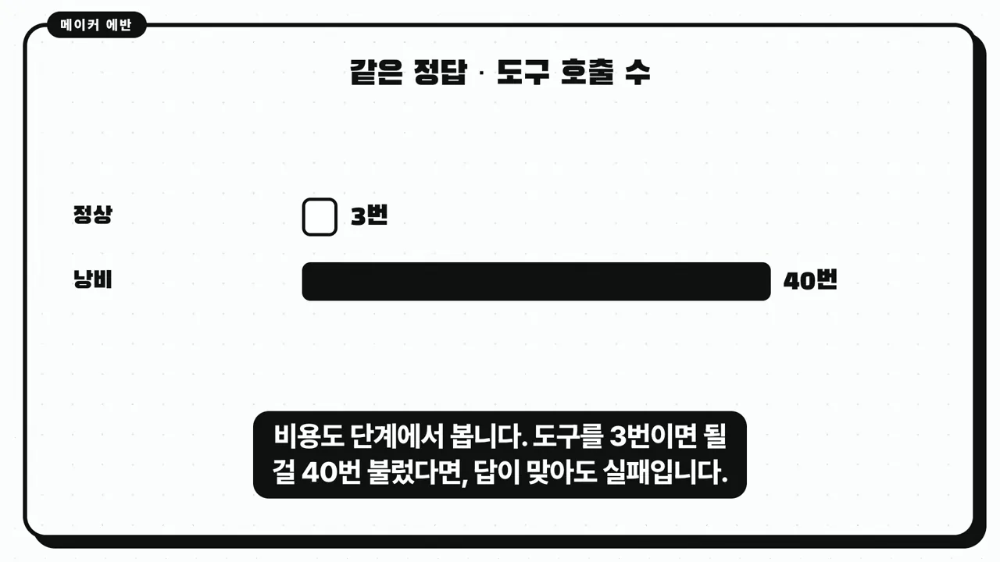
판정 기준을 정리하면 아래 표예요. 이 화면은 영상 끝 정리 부분에 나와요. 자유로운 길이면 결과를, 순서가 약속이면 단계를 보고, 트레이스는 어느 쪽이든 항상 저장해요.
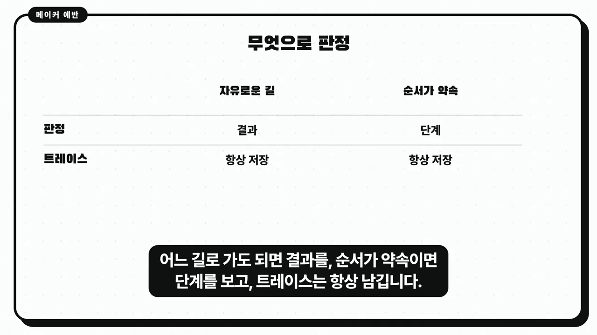
점수가 떨어지면 트레이스가 어느 단계에서 틀렸는지 보여 줘요. 그 실패한 기록이 다음 테스트 케이스가 되고요.
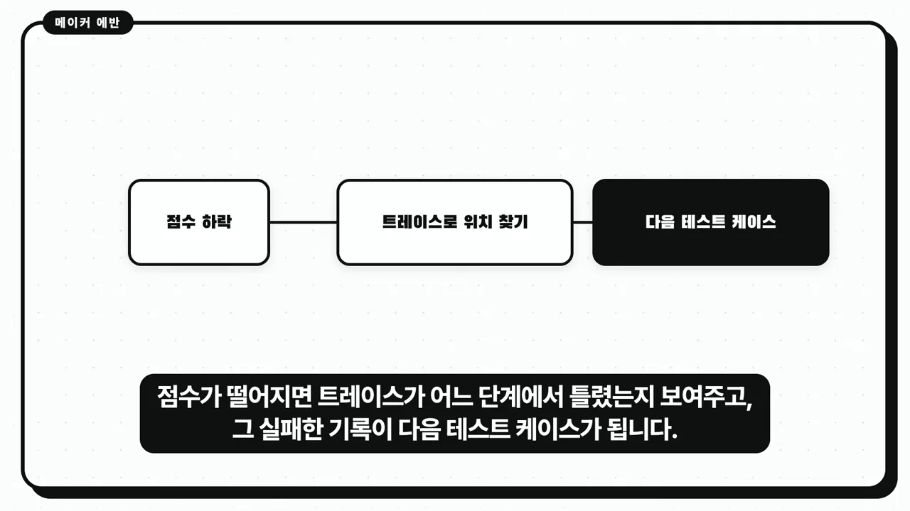
점수 하나는 범위예요
같은 에이전트를 같은 세트에 2번 돌려도 점수가 달라요. 처음엔 82점, 다음엔 79점처럼요. 작은 세트일수록 더 흔들려요.
아래 막대가 그 이유예요. 케이스 하나의 무게가 20개 세트면 5.0점, 100개면 1.0점, 200개면 0.5점이에요. 20개 세트에서는 운 한 번에 5점이 움직여요.
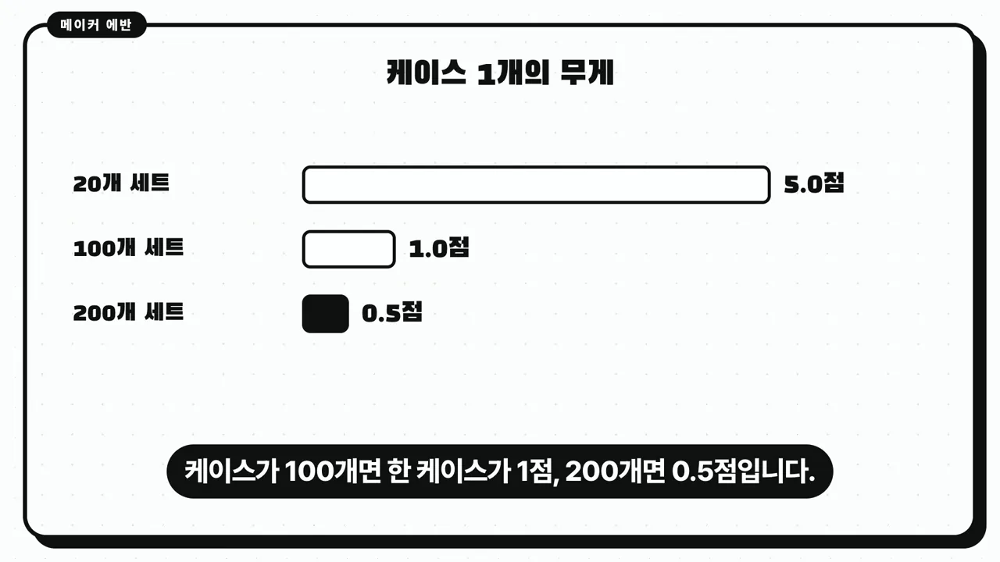
평균 말고 뒤집힌 케이스를 봐요
그래서 두 숫자만 비교하면 안 돼요. 이전 버전과 새 버전을 같은 케이스에 돌리고, 케이스별로 뒤집힌 걸 봐요. 아래는 같은 60개 케이스에서 이전 버전 47개, 새 버전 50개가 통과한 결과예요. 평균은 올랐어요.
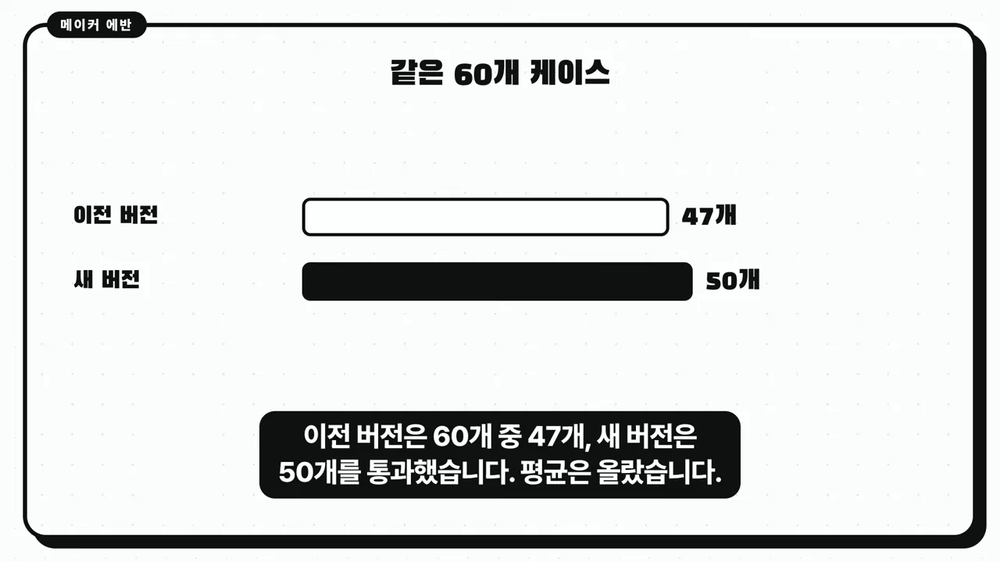
케이스별로 보면 얘기가 달라요. 5개가 실패에서 통과로 바뀌었고, 2개는 통과에서 실패로 바뀌었어요. 이건 개선이 아니라 교환이에요.
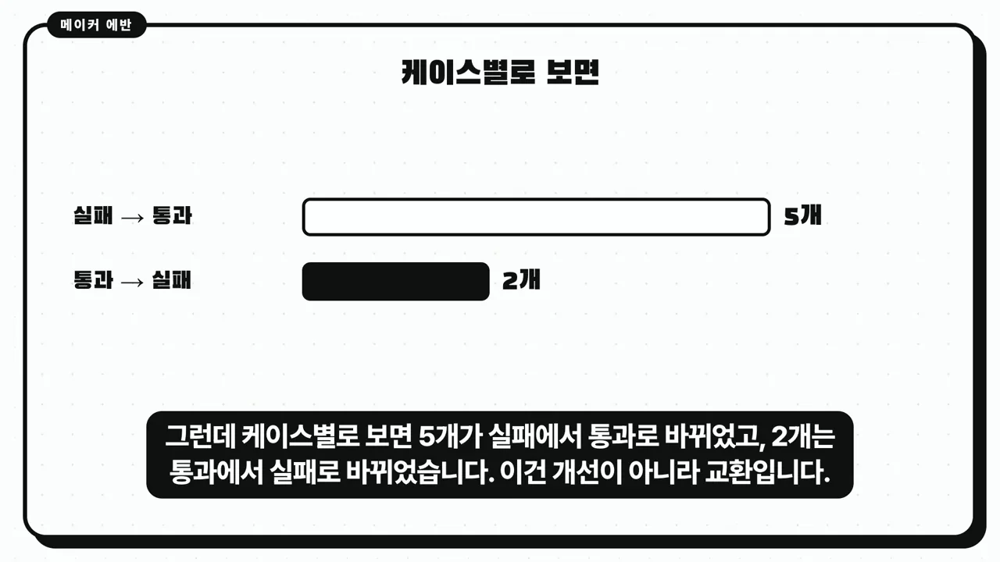
글의 VPN 사례
검색만 하던 에이전트에 티켓 도구를 붙였더니 평균 점수가 올랐어요. 그런데 사용법 질문 하나가 문서 검색에서 티켓 생성으로 뒤집혀 있었어요. 원인은 도구 설명이었어요. 화면 가운데 큰 글씨 'VPN 문제에 사용'이 적혀 있어서, VPN(Virtual Private Network)이라는 단어만 나와도 티켓을 만든 거예요.
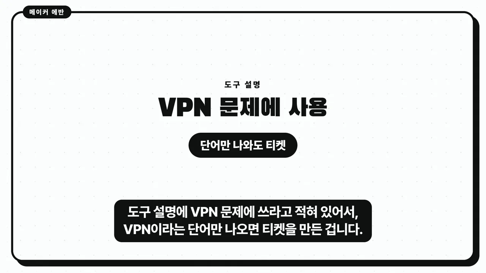
고친 건 한 문장이었어요. 'IT 담당자가 직접 조치할 요청에만' 쓰라고 범위를 좁혔어요.
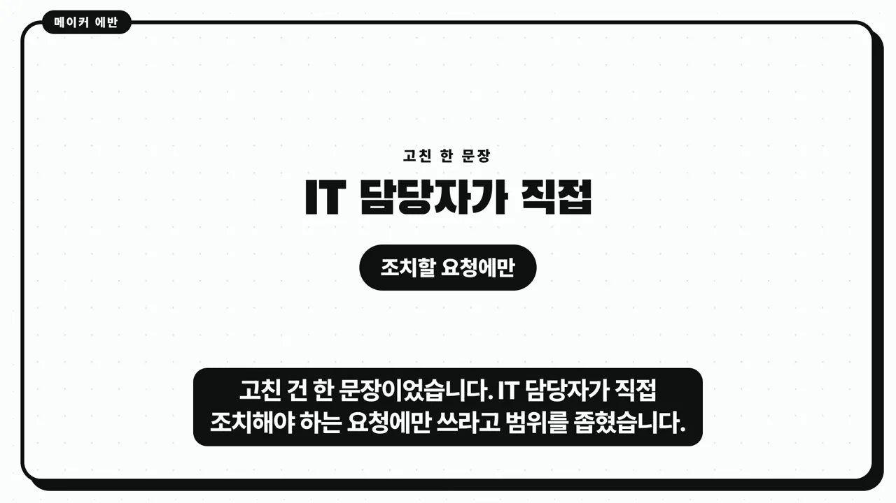
배포 게이트와 추세선
배포를 막는 게이트도 한 번의 흔들림으로 막으면 안 돼요. 화면처럼 '기준선보다 나쁨'이 '한 번 더 나쁨'으로 이어질 때만 배포를 막아요. 예를 들면 60개 세트에서 4개 이상 순손실이 2번 연속일 때예요.
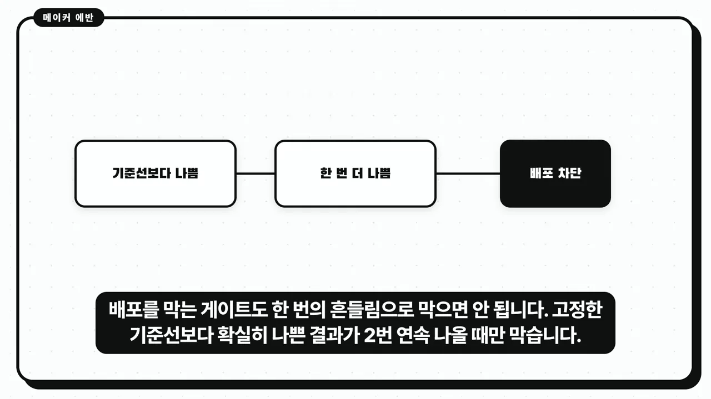
그리고 점 하나가 아니라 선을 봐요. 통과율, 실행당 비용, 지연 시간을 같은 차트에 두고 릴리스마다 봐요.
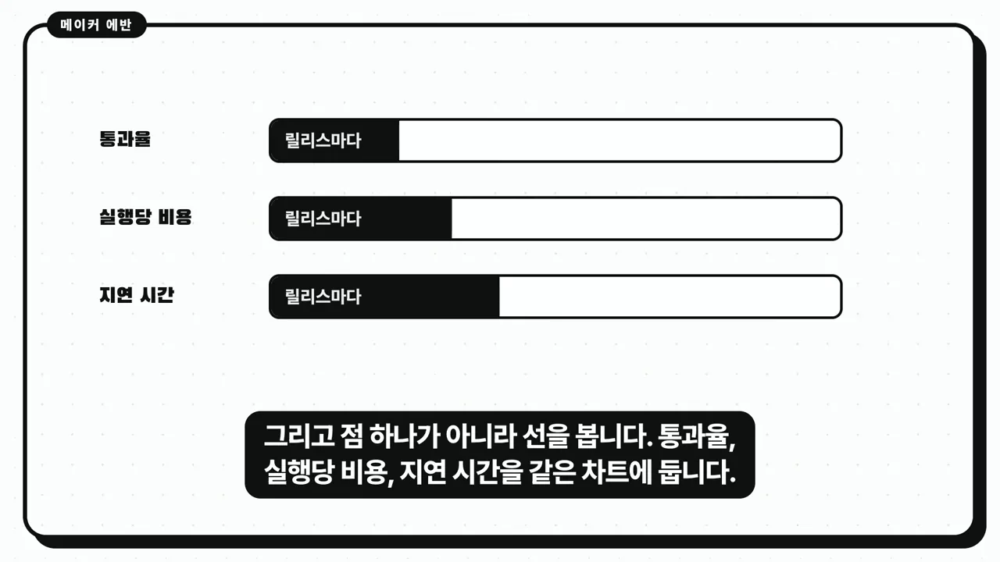
아래 표가 그 예예요. 품질은 47/60에서 50/60으로 올랐는데, 비용은 2배, 응답은 2초에서 약 5초가 됐어요. 좋은 거래인지 다시 봐야 해요.
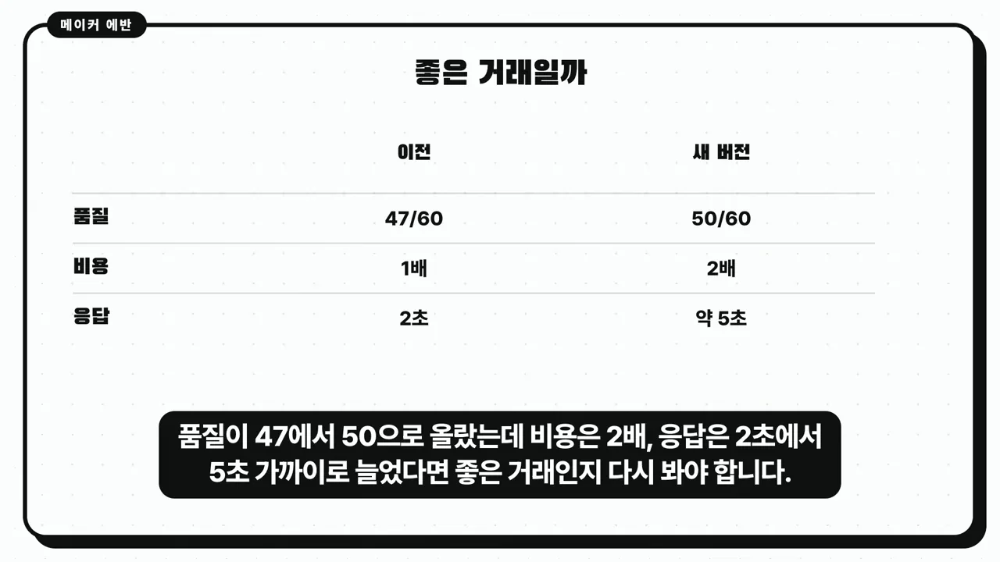
모델·검색·구조를 고르는 법
Evals가 있으면 시스템 선택이 오후 한나절짜리 실험이 돼요. 영상은 모델, 검색, 구조 순서로 예를 들어요.
모델
기본 실수는 모든 일에 가장 강한 모델을 쓰는 거예요. 라우팅이나 짧은 질문 답변은 작은 모델이 100개 중 91개, 큰 모델이 93개처럼 차이가 작은 경우가 많대요. 아래 표의 작은 모델 줄을 보면 점수는 -2점인데 비용은 1/10, 속도는 2배예요. 이런 데는 작은 모델이 이겨요.
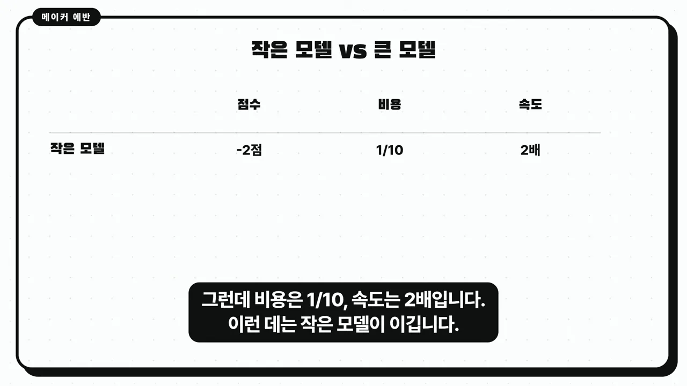
여러 단계 도구 사용 같은 어려운 작업은 달라요. 차이가 몇 개의 어려운 케이스에 몰려요. 큰 모델만 푸는 케이스가 있으면 그때 업그레이드가 증명돼요. 그리고 저지는 채점받는 에이전트보다 강한 모델이어야 하고, 비교하는 동안 저지와 루브릭과 케이스는 고정해요.
검색
맞는 문서를 가져왔는지와, 답이 그 문서에 충실한지를 따로 재요. 가져왔는지는 코드로, 충실한지는 저지로 봐요. 조건은 한 번에 하나씩만 바꿔요.
아래 막대는 리랭커 하나만 바꾼 결과예요. 리랭커가 없을 땐 충실도가 50개 중 36, 붙이니 43이 됐고 비용은 15% 늘었어요. 이 정도면 보통 붙여요. 1점 오르는데 지연이 2배라면 안 붙이고요.
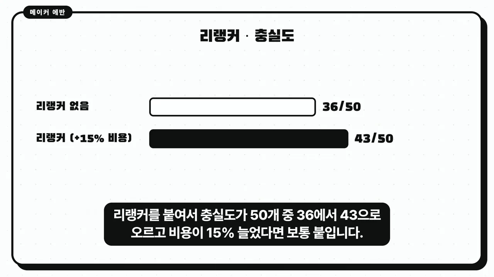
구조
처음부터 에이전트를 여러 개로 나누지 말래요. 에이전트가 하나 늘 때마다 아래 화면 가운데의 '맥락 손실' 같은 넘겨주는 지점이 생겨요. 지연과 비용과 디버깅 부담도 같이 늘어요.
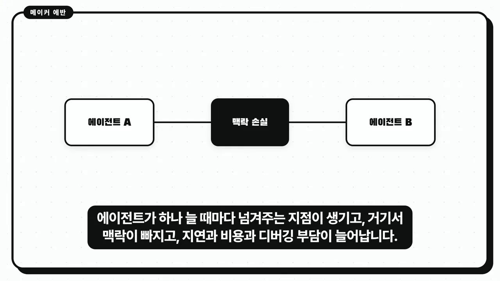
마지막 비교 예시
영상은 두 구성을 같은 60개 케이스로 비교해요. 오른쪽 테두리 친 B가 큰 모델에 리랭커를 붙인 구성이에요. 통과는 47에서 50으로 늘었지만, 1,000회 비용은 8$에서 16$, 지연은 2초에서 5초가 됐어요.
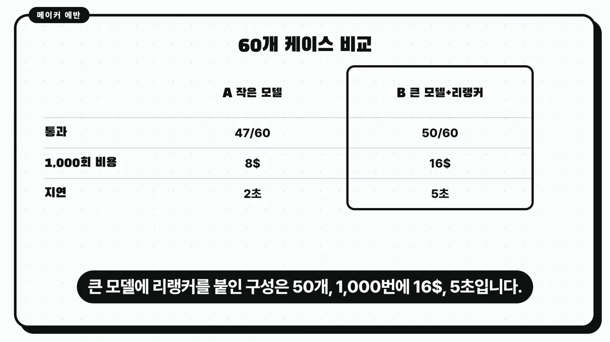
B는 60개 중 3개를 더 통과해서 백분율로 5점 높아요. 그래도 질문은 '5점 높으니 배포하자'가 아니에요. 아래 화면처럼 B는 티켓 케이스 3개를 고쳤지만 문서 케이스 2개를 깨뜨렸고, 비용 2배·지연 2.5배를 더 냈어요. 그만큼 가치가 있냐가 질문이에요.
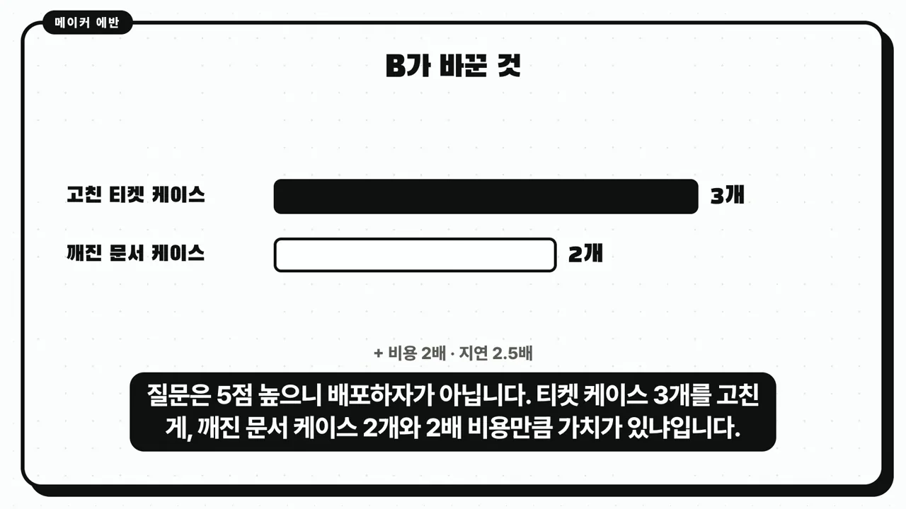
매일 돌리는 법, 그리고 반론
이걸 매일 돌리려면 속도별로 나눠야 해요. 이 대목에서 영상은 참고 자료로 arXiv 논문 2411.13768을 띄워요.
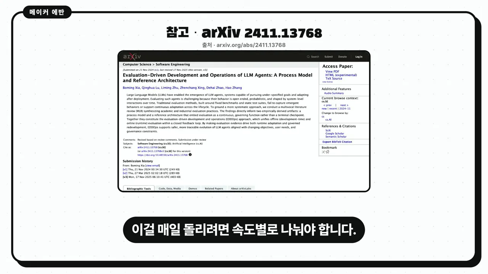
| 확인 | 언제 돌리나 | 메모 |
|---|---|---|
| 코드 확인 | 커밋마다 | 모델 호출이 없어서 몇 초면 끝나요 |
| 저지 확인 | 풀 리퀘스트마다 일부, 밤마다 전체 | 비싼 저지는 샘플만 돌려요 |
| 여러 턴 시뮬레이션·공격 테스트 | 밤 또는 주 단위 | 병합을 막는 데는 쓰지 않아요 |
몇 초 걸리는 테스트는 계속 돌려요
글에 인용된 한 팀은 티켓 20개를 연속으로 돌리는 데 162초가 걸렸어요. 병렬로 돌리고 모델 대기 시간을 겹치게 했더니 18초, 약 9배가 됐어요. 아래 막대는 영상이 말한 두 숫자를 같은 눈금으로 그린 거예요.
테스트를 테스트하고, 비용을 관리해요
확실히 나쁜 대화 모음을 두고, 모든 메트릭이 그걸 실패시키는지 봐요. 그 팀은 11개를 뒀어요. 자격 없는 사람 승인, 확인 없이 티켓 생성, 만든 적 없는 티켓 번호 인용 같은 것들이에요. 나쁜 케이스에 좋다고 하는 메트릭이 나오면, 에이전트가 아니라 메트릭을 고쳐요.
비용은 처음부터 관리해요. 실행마다 입력 토큰, 출력 토큰, 비용을 출력해요. 코드 확인은 전부, 비싼 저지 확인은 샘플만 돌려요. 풀 리퀘스트마다 대화 20개, 위험한 변경에만 100개 이상이에요.
배포 후에도 고리를 닫아요
아래 흐름처럼 모든 답에 가드레일을 걸고, 실제 대화의 5~10%를 저지가 채점하고, 실패를 모아요. 저지 신뢰도가 낮거나 사용자가 싫어요를 누른 대화는 사람에게 보내고, 그 실패를 새 골든으로 넣어요.
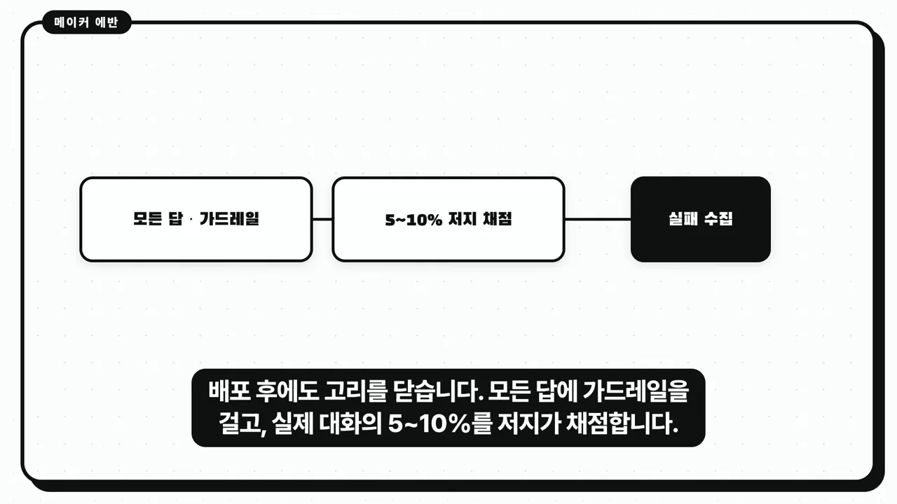
규제가 있는 분야의 한 팀은 평균 하나로 판정하지 않았어요. 라우팅, 안전, 코칭, 요약 같은 카테고리마다 따로 배포를 막을 수 있게 했대요.
반론도 있어요
- 비용 — Evals는 토큰을 2번 써요. 에이전트를 돌릴 때 한 번, 저지를 돌릴 때 한 번이요. 작은 팀이 초기에 다 갖추면 기능 만드는 시간보다 테스트 만드는 시간이 길어질 수 있어요.
- 저지도 결국 모델 — 저지가 틀리면 틀린 기준으로 확신하게 돼요. 전부 좋다고 하는 저지는 저지가 없는 것보다 나쁘다고 글도 말해요.
- 숫자는 특정 팀의 보고 — 9배 빨라졌다는 것도 그 팀의 결과지, 우리 시스템에서 그렇다는 보장은 없어요.
- 고정된 로직에는 필요 없음 — 입력과 출력이 고정된 로직은 일반 유닛 테스트로 충분하다고 글도 말해요.
그래서 발표자는 이걸 한 번에 전부 하라는 얘기로 읽지 않아요. 실패한 케이스 하나를 적고, 3번 돌리고, 다음 변경 뒤에 다시 돌리는 고리부터 시작하라는 얘기로 읽어요. 발표자 자신도 클로드 코드 스킬을 만들 때 스킬마다 evals.json을 하나씩 둬요.
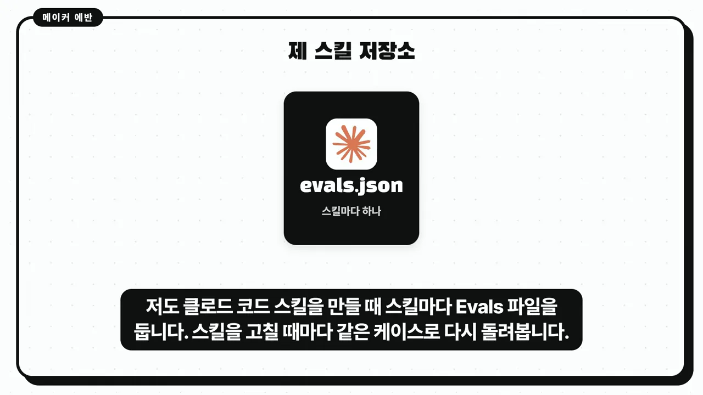
지난번에 어떻게 답했는지 믿지 마세요. 그 케이스를 적고, 다음 변경 뒤에 다시 돌리세요.
— 영상 13:33